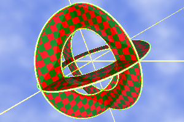

Rendering complex scenes is expensive in terms of time... if you try to render all features every time. XSight RT provides a control in the task panel for indicating the Render Quality option.

Besides the "optimal" quality, there are another five modes: sonar, draft, textured draft, basic and good enough. It's highly recommendable to use one of the draft modes or even the sonar mode while designing or verifying settings for a new scene.
We'll use the following scene to show the differences among these modes:
This scene, rendered in the optimal mode, features a sky background and a shape with a checker pigment, showing some reflections.
Draft mode
Most of the times, the draft sampler will give enough feedback about the scene at full speed, without loosing geometric details:
The draft sampler is faster than the basic sampler thanks to some simplifications it applies:
- No matter what sampler has been configured for the scene, it is substituted by the Draft sampler. This special sampler doesn't trace reflections and refractions.
- Background is rendered in draft mode.
- Spheric lights are converted to point lights.
- Materials are simplified. Each shape is displayed with an uniform color.
However, as you can see in the above image, shadows are still traced, and the cosine law is still applied when calculating the radiance of a surface.
Textured draft mode
The textured draft is almost identical to the draft mode, except that each shape is render with it final texture. The same happens with the selected scene background.
Sonar mode
The sonar mode is even faster than drafts, since there are no shadow tests in this mode. The image is generated by mapping depth, as probed by visual rays, to a user-selected range of colors.
You can change the color code using the XSight RT Options dialog box.
When a draft is not good enough...
All the already mentioned qualities don't provide support for reflection. If reflections are an important part of your design, you can use either the basic mode or the good enough level. Basic is rendered with a basic sampler, configured to allow just one reflection per ray. Good enough is implemented with a super sampler, with two bounces per ray and oversampling for eliminating jagged edges.
|  |
In most scenes, there's little difference between the Good enough and the Optimal mode.
See also
Home | Using XSight's Ray Editor | Rendering | Multithreading | Editor Window | Image Window | Scene Wizard | Noise Generator | Samplers | Small Instantiation Language